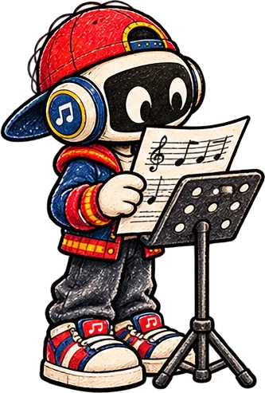

<!doctype html>
<html lang="pt-BR"><head><meta charset="utf-8"><title>pauLta ao Vivo · 3 opções de design</title>
<meta name="viewport" content="width=device-width,initial-scale=1">
<style>
@font-face{font-family:'Anton';src:url(../assets/fonts/Anton-latin.woff2) format('woff2')}
@font-face{font-family:'Gochi Hand';src:url(../assets/fonts/GochiHand-latin.woff2) format('woff2')}
@font-face{font-family:'Special Elite';src:url(../assets/fonts/SpecialElite-latin.woff2) format('woff2')}
@font-face{font-family:'Silkscreen';src:url(../assets/fonts/Silkscreen-700-latin.woff2) format('woff2');font-weight:700}
@font-face{font-family:'Hanken Grotesk';src:url(../assets/fonts/HankenGrotesk-latin.woff2) format('woff2');font-weight:100 900}
*{box-sizing:border-box}body{margin:0;background:#2a2a2e;font-family:'Hanken Grotesk',system-ui,sans-serif;padding:24px}
.todos{display:flex;gap:28px;justify-content:center;align-items:flex-start}
.op{width:390px}.rot{color:#fff;font:700 20px 'Hanken Grotesk';text-align:center;margin:0 0 10px}.rot small{display:block;font-weight:400;font-size:13px;opacity:.75}
.tel{width:390px;height:790px;border-radius:34px;overflow:hidden;position:relative;border:6px solid #111;box-shadow:0 10px 30px #0008;display:flex;flex-direction:column}
.tit{display:flex;justify-content:space-between;align-items:center;padding:16px 16px 6px}
button{font:inherit;cursor:pointer}
.pauta svg{display:block;width:100%;height:auto}
.chips{display:flex;gap:6px;flex-wrap:wrap;align-items:center;justify-content:center}
.chips b{font:11px 'Special Elite';letter-spacing:.08em;text-transform:uppercase;margin-right:2px}
.chip{padding:4px 11px;font-size:13px;border:1.5px solid;background:transparent}
.teclado{position:relative;display:grid;grid-template-columns:repeat(3,1fr);gap:6px}
.nome{font:400 14px 'Gochi Hand'}

/* ===== A: palco à noite ===== */
.A{background:radial-gradient(120% 60% at 50% 0%,#3b2a63 0%,#16213f 45%,#0b1226 100%);color:#fff7e0}
.A .tit h2{font:400 30px 'Anton';letter-spacing:.03em;margin:0;text-shadow:0 0 12px #ffcf5a88}
.A .prog{display:flex;gap:4px;justify-content:center;margin:4px 70px 10px 18px}.A .prog i{width:20px;height:20px;display:block;clip-path:polygon(50% 0,62% 36%,100% 38%,70% 60%,80% 100%,50% 76%,20% 100%,30% 60%,0 38%,38% 36%);background:#ffffff26}.A .prog i.f{background:#ffcf5a;filter:drop-shadow(0 0 5px #ffcf5a)}.A .prog i.n{background:#ff4f6d;filter:drop-shadow(0 0 6px #ff4f6d)}
.A .holo{margin:0 18px;border-radius:20px;padding:16px 10px 8px;background:linear-gradient(160deg,#ffffff1c,#ffffff08);border:1.5px solid #ffcf5a77;box-shadow:0 0 30px #ffcf5a33 inset,0 10px 26px #0007;position:relative}
.A .holo:before{content:"";position:absolute;inset:0;border-radius:20px;background:radial-gradient(70% 90% at 50% 0%,#ffcf5a30,transparent 70%);pointer-events:none}
.A .pauta svg line{stroke:#ffcf5a!important;filter:drop-shadow(0 0 3px #ffcf5a99)}.A .pauta svg path{stroke:#ffcf5a!important}.A .pauta svg ellipse{fill:#ff4f6d!important;filter:drop-shadow(0 0 8px #ff4f6d)}
.A .quest{text-align:center;font:400 21px 'Gochi Hand';margin:14px 20px 8px;color:#ffe9a8}
.A .ouvir{align-self:center;margin:0 auto 8px;border:1.5px solid #ffcf5a;color:#ffcf5a;background:#ffcf5a18;border-radius:30px;padding:7px 16px;font-weight:700;font-size:14px;box-shadow:0 0 14px #ffcf5a44}
.A .teclado{margin:6px 18px;height:176px}.A .tec{border-radius:0 0 14px 14px;border:0;background:linear-gradient(#1c2a52,#0d1430);color:#ffcf5a;font:400 26px 'Gochi Hand';padding-bottom:12px;display:flex;align-items:flex-end;justify-content:center;box-shadow:0 0 0 2px #ffcf5a66 inset,0 8px 0 #060a18;position:relative}.A .tec.on{background:linear-gradient(#ff8da0,#ff4f6d);color:#fff;box-shadow:0 0 28px #ff4f6d,0 0 0 2px #fff inset}
.A .pp{position:absolute;top:0;width:22%;height:56%;background:#05081a;border-radius:0 0 8px 8px;z-index:2;box-shadow:0 0 0 1.5px #ffcf5a44;pointer-events:none}
.A .chips{margin:10px 14px;color:#ffe9a8}.A .chip{border-color:#ffcf5a88;color:#ffe9a8;border-radius:20px}.A .chip.on{background:#ffcf5a;color:#16213f;font-weight:800;box-shadow:0 0 12px #ffcf5a88}
.A .paul{position:absolute;right:6px;top:2px;width:66px;filter:drop-shadow(0 0 10px #ffcf5a66)}

/* ===== B: caderno zine ===== */
.B{background:#f6ecd5;background-image:linear-gradient(#9fb8d422 1px,transparent 1px),linear-gradient(90deg,#9fb8d422 1px,transparent 1px);background-size:22px 22px;color:#16233d}
.B .tit h2{font:400 34px 'Gochi Hand';margin:0;color:#8e1b2c;transform:rotate(-2deg);background:#ffd23f;padding:2px 14px;box-shadow:3px 3px 0 #16233d;border:2px solid #16233d}
.B .prog{display:flex;gap:6px;justify-content:center;margin:6px 0 10px}.B .prog i{width:24px;height:24px;border:2.5px solid #16233d;border-radius:50%;background:#fff;display:block;transform:rotate(calc(var(--r,0)*1deg))}.B .prog i.f{background:#2fb86b}.B .prog i.f:after{content:"✓";display:block;text-align:center;font:800 15px/19px 'Hanken Grotesk';color:#fff}.B .prog i.n{background:#ffd23f}
.B .polaroid{margin:4px 22px 0;background:#fff;padding:12px 12px 22px;border:2px solid #16233d;box-shadow:5px 5px 0 #16233d;transform:rotate(-1.2deg);position:relative}
.B .polaroid:before,.B .polaroid:after{content:"";position:absolute;top:-12px;width:78px;height:24px;background:#d99a2bcc;transform:rotate(-4deg)}.B .polaroid:before{left:16px}.B .polaroid:after{right:16px;transform:rotate(5deg);background:#e84a5fcc}
.B .pauta svg line{stroke:#2b4a8a!important}.B .pauta svg path{stroke:#16233d!important}.B .pauta svg ellipse{fill:#d2283d!important}
.B .quest{text-align:center;font:400 24px 'Gochi Hand';margin:18px 18px 6px;color:#8e1b2c;transform:rotate(.8deg)}
.B .ouvir{display:block;margin:0 auto 6px;border:2.5px solid #16233d;background:#fff;box-shadow:3px 3px 0 #16233d;padding:6px 16px;font-weight:800;font-size:14px;transform:rotate(-1deg)}
.B .teclado{margin:8px 20px;height:168px;gap:10px}.B .tec{border:3px solid #16233d;border-radius:12px;font:400 32px 'Gochi Hand';color:#fff;display:flex;flex-direction:column;align-items:center;justify-content:flex-end;padding-bottom:12px;box-shadow:4px 5px 0 #16233d;position:relative;text-shadow:0 2px 0 #0004}
.B .tec small{font:800 13px 'Hanken Grotesk';opacity:.9}.B .t1{background:#e53935;transform:rotate(-2deg)}.B .t2{background:#fb8c00;transform:rotate(1.5deg)}.B .t3{background:#fdd835;color:#16233d;text-shadow:none;transform:rotate(-1deg)}.B .tec.on{outline:4px solid #16233d;transform:translateY(5px) rotate(0);box-shadow:1px 1px 0 #16233d}
.B .chips{margin:6px 14px}.B .chip{border:2px solid #16233d;background:#fff;box-shadow:2px 2px 0 #16233d;font-weight:700}.B .chip.on{background:#16233d;color:#fff}.B .chips b{color:#16233d}
.B .paul{position:absolute;right:10px;top:6px;width:76px;transform:rotate(5deg)}.B .tit{padding-right:96px}.B .sub{display:block;text-align:center;font:400 17px 'Gochi Hand';margin:-2px 0 4px}

/* ===== C: arcade ===== */
.C{background:#17102b;color:#fff;font-family:'Silkscreen',monospace}
.C .tit{background:#8a1fff;border-bottom:4px solid #05010f;padding:12px 16px}.C .tit h2{font:700 20px 'Silkscreen';margin:0;color:#fff;text-shadow:3px 3px 0 #05010f;letter-spacing:.06em}
.C .hud{display:flex;justify-content:space-between;align-items:center;padding:10px 16px;font:700 13px 'Silkscreen';color:#ffe14d}.C .vinil{width:46px;height:46px;border-radius:50%;background:conic-gradient(#ffe14d 0 30%,#3a2a66 30% 100%);position:relative;border:3px solid #05010f}.C .vinil:after{content:"";position:absolute;inset:14px;border-radius:50%;background:#ff3d7f;border:3px solid #05010f}
.C .crt{margin:0 14px;border:6px solid #05010f;border-radius:18px;background:#0a0a14;padding:12px 8px;box-shadow:0 0 0 3px #8a1fff,0 0 28px #8a1fff88;position:relative;overflow:hidden}
.C .crt:after{content:"";position:absolute;inset:0;background:repeating-linear-gradient(#0000 0 2px,#0004 2px 4px);pointer-events:none}
.C .pauta svg line{stroke:#46ff9c!important;filter:drop-shadow(0 0 3px #46ff9c)}.C .pauta svg path{stroke:#46ff9c!important}.C .pauta svg ellipse{fill:#ffe14d!important;filter:drop-shadow(0 0 6px #ffe14d)}
.C .quest{text-align:center;font:700 13px/1.5 'Silkscreen';margin:14px 14px 8px;color:#46ff9c;text-shadow:0 0 8px #46ff9c88}
.C .ouvir{display:block;margin:0 auto 8px;border:3px solid #05010f;background:#ffe14d;color:#05010f;box-shadow:0 5px 0 #05010f;padding:8px 14px;font:700 12px 'Silkscreen'}
.C .teclado{margin:8px 14px;height:170px;gap:10px}.C .tec{border:4px solid #05010f;border-radius:14px;font:700 22px 'Silkscreen';color:#05010f;display:flex;align-items:flex-end;justify-content:center;padding-bottom:12px;box-shadow:0 10px 0 #05010f;position:relative;top:0}.C .t1{background:#ff3d7f}.C .t2{background:#46ff9c}.C .t3{background:#4db8ff}.C .tec.on{top:8px;box-shadow:0 2px 0 #05010f;filter:brightness(1.25)}
.C .chips{margin:6px 12px;color:#fff}.C .chip{border:3px solid #05010f;background:#3a2a66;color:#fff;font:700 11px 'Silkscreen';box-shadow:0 3px 0 #05010f}.C .chip.on{background:#ffe14d;color:#05010f}.C .chips b{color:#ffe14d;font:700 10px 'Silkscreen'}
.C .paul{position:absolute;right:10px;top:48px;width:66px;image-rendering:pixelated;filter:contrast(1.2) saturate(1.3)}
</style></head><body>
<div class="todos" id="todos"></div>
<script type="module">
import { clefStaff } from '../js/paulta/draw.js';
const staff = clefStaff('sol', 30); // 30 = mi central da clave de sol (diatonica(64)): a nota do exemplo
const chips = (cl) => `<div class="chips"><b>som</b><button class="chip on">piano</button><button class="chip">violão</button><button class="chip">sinos</button></div><div class="chips"><b>como tocar</b><button class="chip">na tela</button><button class="chip on">no instrumento</button><b style="margin-left:6px">mic</b><button class="chip on">violão</button><button class="chip">sinos</button></div>`;
const A = `<div class="tel A"><div class="tit"><h2>pauLta ao vivo</h2></div>
<div class="prog">${Array.from({ length: 10 }, (_, i) => `<i class="${i < 2 ? 'f' : i === 2 ? 'n' : ''}"></i>`).join('')}</div>
<div class="holo"><div class="pauta">${staff}</div></div><p class="quest">que nota é essa? toque no teclado</p><button class="ouvir">🔊 ouvir a nota</button>
<div class="teclado"><div class="tec">dó</div><div class="tec on">ré</div><div class="tec">mi</div><div class="pp" style="left:22.5%"></div><div class="pp" style="left:55.5%"></div></div>${chips()}</div>`;
const B = `<div class="tel B"><div class="tit"><h2>pauLta ao vivo</h2></div><span class="sub">nota 3 de 10</span>
<div class="prog">${Array.from({ length: 10 }, (_, i) => `<i class="${i < 2 ? 'f' : i === 2 ? 'n' : ''}" style="--r:${(i % 3) - 1}"></i>`).join('')}</div>
<div class="polaroid"><div class="pauta">${staff}</div></div><p class="quest">que nota é essa? toque no teclado ✎</p><button class="ouvir">🔊 ouvir a nota</button>
<div class="teclado"><div class="tec t1">dó<small>1</small></div><div class="tec t2 on">ré<small>2</small></div><div class="tec t3">mi<small>3</small></div></div>${chips()}</div>`;
const C = `<div class="tel C"><div class="tit"><h2>pauLta ao vivo</h2></div><div class="hud"><span>NOTA 3/10</span><div class="vinil"></div><span>★ 2</span></div>
<div class="crt"><div class="pauta">${staff}</div></div><p class="quest">QUE NOTA É ESSA?<br>TOQUE NO TECLADO</p><button class="ouvir">▶ OUVIR A NOTA</button>
<div class="teclado"><div class="tec t1">DÓ</div><div class="tec t2 on">RÉ</div><div class="tec t3">MI</div></div>${chips()}</div>`;
document.getElementById('todos').innerHTML = [['A', 'palco à noite', 'holofote, estrelas douradas e teclas que acendem', A], ['B', 'caderno zine', 'papel quadriculado, fita adesiva e teclas coloridas', B], ['C', 'arcade e vinil', 'tela de fliperama, botões grandes e vinil que enche', C]].map(([l, n, d, h]) => `<div class="op"><p class="rot">opção ${l} · ${n}<small>${d}</small></p>${h}</div>`).join('');
await document.fonts.ready; await Promise.all([...document.images].map((i) => (i.complete ? 0 : new Promise((r) => { i.onload = i.onerror = r; })))); window.__ok = 1;
</script></body></html>
